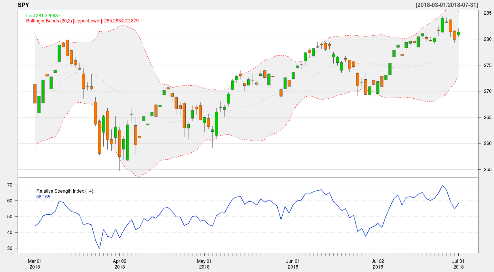

In this tutorial we will create some financial charts. It will be a candlestick chart of SPDR S&P 500 ETF. We will also add few techincal indicators, Bollinger Bands and RSI. The chart will look like this:
We will use quantmod library to read historical prices from Yahoo Finance and to draw charts, so make sure the library is installed on your system.
First, let us read year to date prices of SPDR S&P 500 ETF from Yahoo Finance.
Next, we will draw the candlestick chart of SPY and add two technical indicators, Bollinger Bands and RSI.